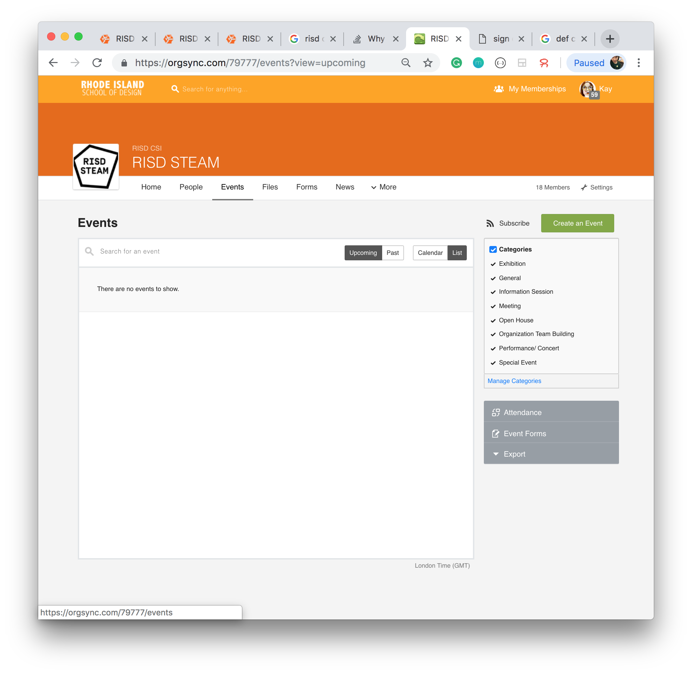
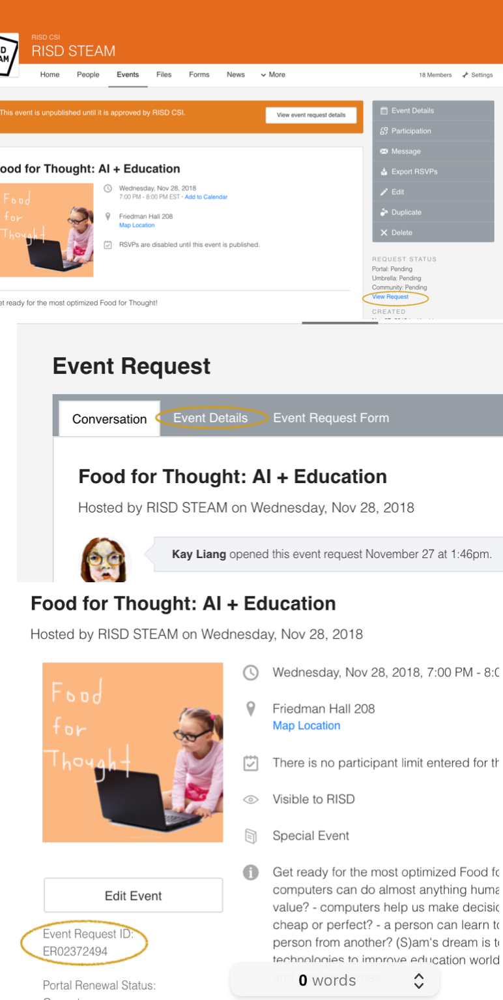
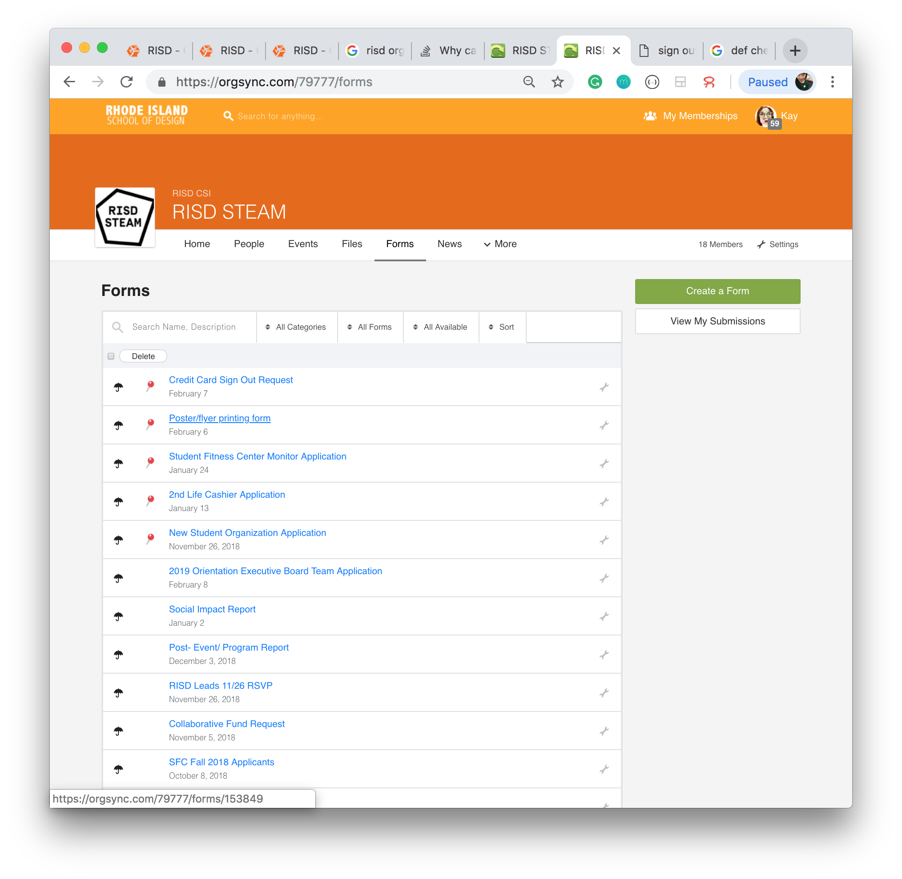
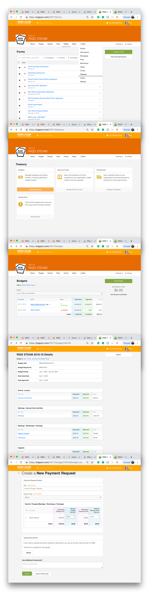

how 2 print at risd
- normal method
- sign into RISD OrgSync
- go onto RISD STEAM page
- create an event

- retrieve event id (needed for the print request)

- fill in a printing form

- find CSI walk-in advisor (2nd floor Carr Haus) before 1pm and borrow the printing card. They may have to approve your printing form then.
- fast (but slow reimbursement) method
- print with your RISD card
- print out your RISD bucks payment log and fill in a reimbursement form at CSI
- go to your club budget

- wait about a month for your check to arrive in the mail